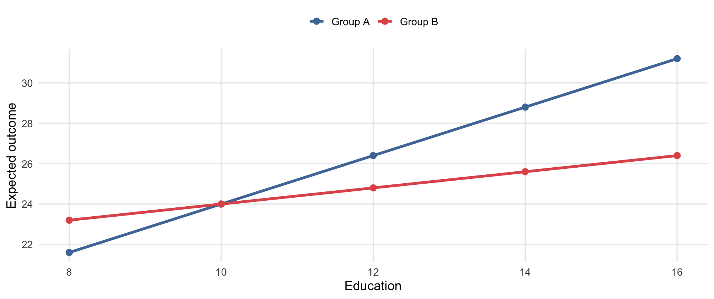

Sociology 106: Quantitative Sociological Methods
May 5, 2026
Weekly Assignment #11
In-class presentations
Final paper
Here is the schedule for final presentations. You’ll need to send me your presentation 2 hours before class so I can load them on my laptop.
Tuesday, April 28
| # | Student |
|---|---|
| 1 | Zhexin Chen |
| 2 | Mengxuan Wu |
| 3 | Arohi Behara |
| 4 | Megan Farrenkopf |
| 5 | Jenny Liu |
| 6 | Bianca Chiu |
| 7 | Srisha Raj |
| 8 | Keyla Barcenas |
| 9 | Mahak Rathi |
Tuesday, May 5
| # | Student |
|---|---|
| 1 | Lawrence So |
| 2 | Doyoung Kwak |
| 3 | Azariah Smith |
| 4 | Macheng Xiang |
| 5 | Violetta Wang |
| 6 | Yihan Zhang |
| 7 | Rose Kong |
| 8 | Anthony Maldonado |
| 9 | Claudia Gomez Bernal |
Big picture
This review is intentionally high-level. The goal is to help you organize your studying and recognize the kinds of reasoning the exam will ask for, not to preview exact questions.
What this means for studying
Focus on concepts, interpretation, and choosing the right tool for the job. You do not need to memorize long stretches of code.
Multiple choice
R^2Short answer
| Goal | What the variables look like | Good choice |
|---|---|---|
| Show the distribution of one categorical variable | One categorical variable | Bar chart |
| Show the distribution of one quantitative variable | One continuous/count variable | Histogram |
| Compare the mean of a quantitative outcome across two groups | Quantitative Y + binary group |
Two-sample t-test |
| Study the relationship between two categorical variables | Categorical X + categorical Y |
Chi-square test |
| Model a continuous outcome | Quantitative Y |
OLS regression |
| Model a binary outcome | Y = 0/1 |
Logistic regression |
On the exam
Many mistakes come from choosing the wrong tool because the student did not first identify the outcome type.
P-value wording to know well
A p-value is the probability of getting results this extreme, or more extreme, if the null hypothesis were true.
For any output you read on the exam: identify the direction, comment on statistical significance, then interpret substantively in plain language.
| Term | Estimate |
|---|---|
| Intercept | 5.8*** |
| Divorced | -0.9** |
| Widowed | -0.6 |
| Never married | -1.2*** |
| Age | 0.02* |
R^2 |
0.16 |
Outcome: life satisfaction (1–7 scale). Married is the omitted baseline.
R^2 tells you how much of the variation in the outcome is explained by the modelStudy move
Practice saying coefficient interpretations out loud using the phrase “holding the other variables constant.”
Sample interpretation — Never married
Respondents who have never been married are predicted to score 1.2 points lower on life satisfaction than married respondents (the reference group), holding age constant.
| Term | Odds ratio |
|---|---|
| Income (thousands) | 1.02** |
| Age | 1.03*** |
| Married (1 = yes) | 1.38* |
Outcome: whether the respondent participates in a community organization (1 = yes).
(OR - 1) x 100Examples
1.38 -> about 38% higher odds0.76 -> about 24% lower oddsSample interpretation — Age
Each additional year of age is associated with odds of participating in a community organization that are about 3% higher, holding income and marital status constant.
An interaction asks whether the relationship between X and Y depends on a third variable.

Sample interpretation
Group A’s education slope (1.2) is steeper than Group B’s (0.4) — group membership moderates the relationship between education and the outcome.
| How to Identify | What Moderation does |
|---|---|
| Big question | For whom or under what conditions does X affect Y? |
| Third variable | Changes the slope |
| Typical model | Interaction term |
| Visual idea | Non-parallel lines |
| Example | Education predicts income differently for men and women |
Quick test
If a third variable changes the slope of X -> Y across groups or levels, that is moderation. Look for non-parallel lines in a margins plot.
Sampling
Figure critique
R^2Best use of your time
Do not just reread code. Practice explaining what results mean.